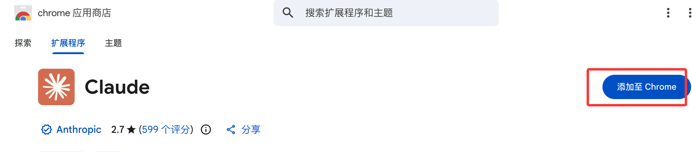

Claude Code Controls Chrome Browser
Claude Code's Chrome integration lets you control the browser directly from the command line (CLI) or the VS Code extension. Claude can:
- Open web pages, click buttons, fill out forms
- Read browser console logs (console errors, network requests, DOM state)
- Interact with any website you're logged into (Gmail, Notion, Google Docs, etc.)
- Record browser actions as GIF files
- Work collaboratively across multiple tabs
Core Advantage: Claude shares your browser's login state, no additional API keys or re-authentication required.
This feature is currently in Beta, allowing you to use natural language instructions in the terminal (CLI) or VS Code to let Claude directly control your Chrome browser for navigation, clicking, input, debugging, data extraction, etc., without manually switching windows.
Installation and Preparation
Prerequisites
Before using this feature, you need to meet the following requirements:
| Condition | Description |
|---|---|
| Claude Code Version | v2.0.73 or higher |
| Chrome Extension Version | Claude in Chrome v1.0.36 or higher |
| Anthropic Account | RequiredDirect Paid Plan(Pro, Max, Teams, or Enterprise) |
| Unsupported Channels | Users accessing via Amazon Bedrock, Google Vertex AI, Microsoft FoundryUnavailable |
Installation Steps
1. Install the browser extension：
- Open Chrome/Edge, visitChrome Web Store - Claude。
- Click "Add to Chrome" and install.
- After installation, it is recommended to restart the browser to ensure the Native Messaging Host loads correctly.

2. Install/Update Claude Code：
- Install Claude Code (CLI or VS Code extension) following the official quickstart.
3. Permissions and Connection：
- On first run, the extension will automatically install the Native Messaging Host.
- Common paths (macOS example):
~/Library/Application Support/Google/Chrome/NativeMessagingHosts/com.anthropic.claude_code_browser_extension.json
How to Start and Connect
Start in CLI
Recommended method: Start directly with Chrome
claude --chrome
-
Or enable in an existing session:
/chrome
Then select enable or reconnect.
-
Set as default(Convenient but increases context consumption):
In/chromeSelect "Enabled by default" in the menu.
Using in VS Code
In the prompt box, enter
@browser+ your instruction, for example:@browser 打开 localhost:3000，检查控制台是否有错误
Check Connection Status
In a Claude Code session, enter/chrome, you can view status, manage permissions, and reconnect the extension.
Basic Usage
Claude Code, throughnatural language prompts,controls the browser without writing complex code. Claude automatically parses your instructions, executes the corresponding actions, and returns results (including screenshots, console logs, extracted data, etc.).
Core Capabilities：
- Navigation: Open a URL
- Interaction: Click elements, input text, scroll pages
- Reading: View DOM, console errors, network requests
- Automation: Form filling, data extraction, cross-tab operations
- Others: Record GIF demos, save CSV, etc.
Prompt Tips：
- Describe clearly and step by step (e.g., "First open the URL, then click the search box, enter XXX and tell me the result").
- Can work with local files (e.g., read CSV for batch operations).
- For long tasks, Claude will execute step by step and report progress.
Practical Examples
Example 1: Simple navigation and interaction
去到 https://www.baidu.com，点击搜索框，输入 "python"，告诉我出现的搜索结果。
Example 2: Local webpage testing and debugging
我刚更新了登录表单验证。请打开 localhost:3000，用无效数据提交表单，检查错误消息是否正确显示，并查看控制台日志。
Example 3: Form automation (with local files)
我有一个 contacts.csv 文件，里面有客户联系方式。对于每一行，打开 crm.example.com，点击“添加联系人”，填写姓名、邮箱和电话，然后提交。
Example 4: Operations on logged-in sites like Google Docs
根据最近的 Git 提交，起草一份项目更新，并添加到我的 Google Doc（网址：docs.google.com/document/d/abc123）。
Example 5: Data extraction and saving
打开产品列表页面，提取每个商品的名称、价格和库存状态，保存为 CSV 文件。
Example 6: Recording a demo GIF
录制一个 GIF，展示从购物车添加商品到结账确认的完整流程。
Example 7: Multi-site workflow
Check my calendar for tomorrow. For each meeting with external attendees, find their company's website and add notes.Other Extensions